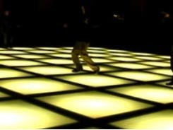
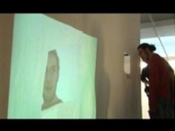
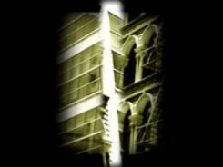
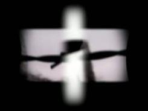
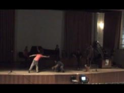
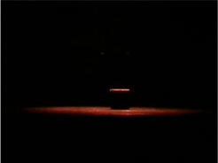
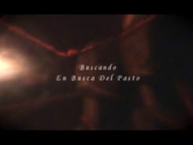
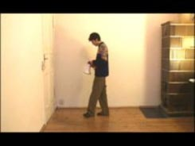
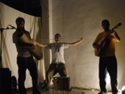
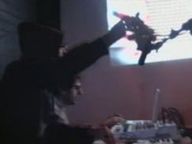

Estos son algunos enlaces al trabajo videográfico de miembros de EBDP. Algunos son simples documentos a cámara fija de actuaciones. Otros, montajes más elaborados. También están algunos de los videos que hemos utilizado como fondo para nuestras improvisaciones, y un microvideo de animación. En el menu de la izquierda se accede a ellos de manera clasificada.

"La Zona del Pasto"
"Cortinilla" o microvideo de animación por Jorge Ruiz.

"La gravedad no miente"
Vídeo de Diegonante

"Este lugar"
Vídeo de la instalación "Este lugar", realizada para el Especial AVLAB en la clausura del Laboratorio de Producción Colectiva, el 13 de enero de 2007, en el Centro Cultural Conde Duque, Madrid, antigua sede de Medialab.

Buildings Collage
Video de Diegonante

Ostkreuz
Video de Diegonante.

"Taller de expresión expontánea"
Grabación en el Congreso de Jovenes Filósofos de Granada en 2008

"Pasto en Escena I"
Grabación del primer "ensayo" del pasto escena. Ensayo entre comillas porque nunca una improvisación se repite.

"Pasto en Escena II"
Grabado en el festival Ulterior (2008), en Vallecas (Madrid)

"Buscando En Busca del Pasto".
Trabajo documental que recoje material del colectivo en el periodo de 2003 a 2009.

"Música en Escena"
Improvisación de Jorge Ruiz Abánades (Berlín, noviembre de 2007)

"Pasto en Escena III"
Grabación de las actuación ofrecida en la sala de arte Magatzems en Valencia en 2009. Es posible descargar y escuchar el audio en este enlace.

"EBDP & NaN.tx"
Montaje de la actuación ofrecida en La Casa de los Jacintos por EBDP y el artista visual NaN.tx